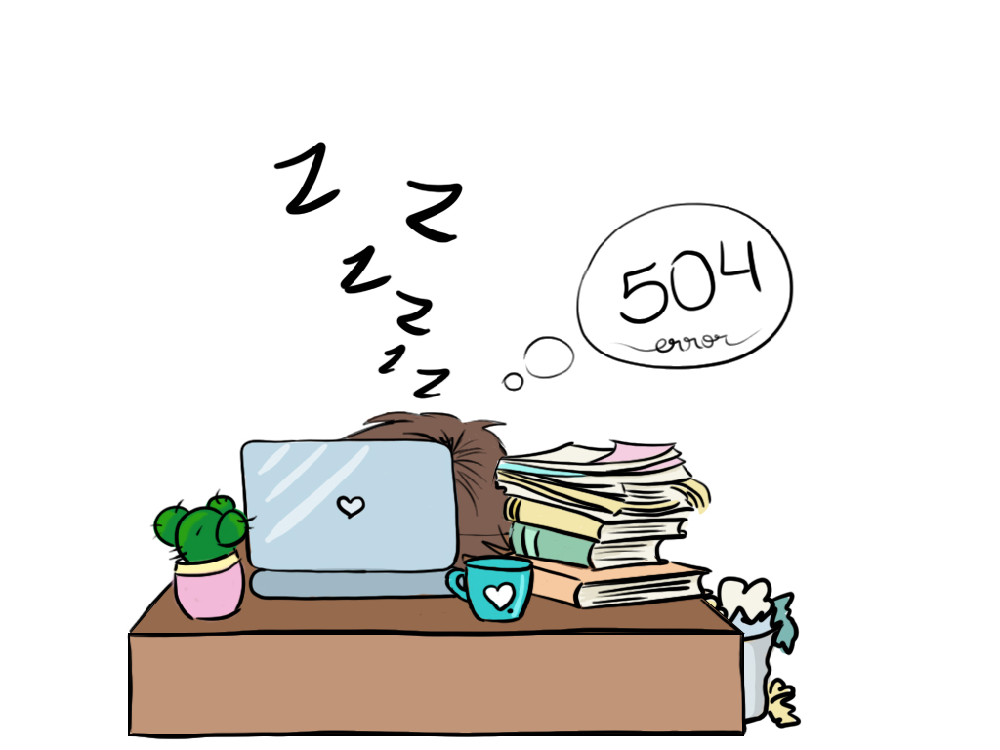

Menú
Trabajos
Sobre mí
Curiosidad
Contacto

Lamento que se este tardando.
Si piensas en dormir una siesta, buena idea!
Pero también puedes probar refrescar la página.
Contactame si el problema persiste.
Contacto
ó puedes volver al
Inicio